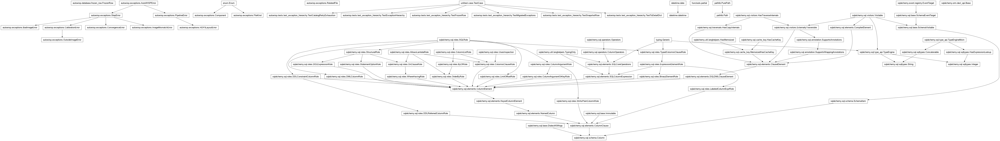
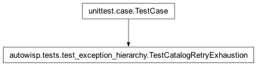
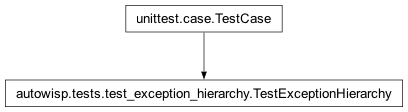
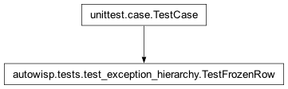
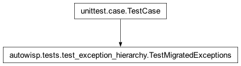
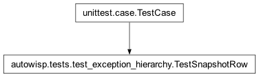
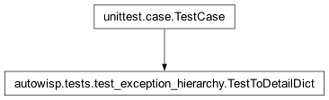

autowisp.tests.test_exception_hierarchy module
Class Inheritance Diagram

Unit tests for the exception hierarchy and FrozenRow.
These tests need no pipeline fixtures or database, so they subclass
unittest.TestCase directly rather than AutoWISPTestCase.
- class autowisp.tests.test_exception_hierarchy.TestCatalogRetryExhaustion(methodName='runTest')[source]
Bases:
TestCase
A Gaia query that exhausts its retries surfaces as CatalogError.
- class autowisp.tests.test_exception_hierarchy.TestExceptionHierarchy(methodName='runTest')[source]
Bases:
TestCase
Contracts every concrete AutoWISP exception must satisfy.
- test_every_concrete_class_sets_component()[source]
Each concrete subclass has a
Component(neverNone).
- test_full_payload_pickle_round_trip()[source]
All context fields survive a pickle round-trip (Pool transport).
- test_minimal_construction_defaults()[source]
A message-only construction leaves context fields empty.
- test_stamp_subprocess_sets_and_is_idempotent()[source]
First stamp records this PID; a later stamp does not overwrite.
- class autowisp.tests.test_exception_hierarchy.TestFrozenRow(methodName='runTest')[source]
Bases:
TestCase
FrozenRow attribute access, immutability, and pickling.
- class autowisp.tests.test_exception_hierarchy.TestMigratedExceptions(methodName='runTest')[source]
Bases:
TestCase
Folded legacy classes are pure AutoWISP exceptions (no stdlib mix-in).
Phase 7 dropped the
ValueError/RuntimeError/IndexErrorbases the legacy classes used to carry; these guard against one creeping back.- test_catalog_error_is_cross_cutting_step_error()[source]
CatalogErroris a component-steperror, not per-stage.
- class autowisp.tests.test_exception_hierarchy.TestSnapshotRow(methodName='runTest')[source]
Bases:
TestCase
snapshot_rowfreezes a live ORM instance into a FrozenRow.
- class autowisp.tests.test_exception_hierarchy.TestToDetailDict(methodName='runTest')[source]
Bases:
TestCase
to_detail_dict+sanitize_for_json(the sidecar payload).- test_detail_dict_fields()[source]
The payload carries the non-column fields, related files in full.
Models a real
find_starsfailure: the input is a calibrated FITS image and the (expected) output is its DR file.
A
strrelated-file path is coerced to Path, serialized POSIX.Regression:
to_detail_dictusedrelated.path.as_posix(), which crashed whenpathwas passed as a plain string.
- class autowisp.tests.test_exception_hierarchy._ToyRow(**kwargs)[source]
Bases:
BaseThrowaway ORM model for exercising
snapshot_row.- host
- id
- secret